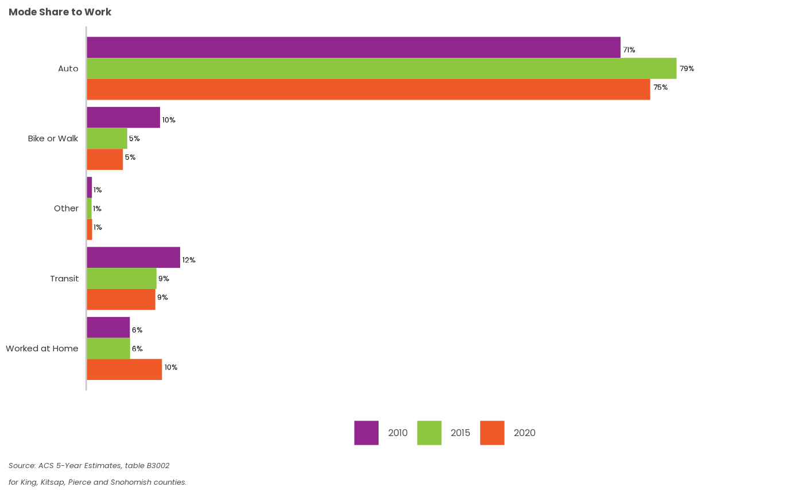

Make a static plot
2-static-plots.RmdAs mentioned in the introduction, psrcplot has static versions of bar, column, line, bubble, and treemap plots. Here we illustrate using a simple bar plot, with American Community Survey (ACS) data from the Census Bureau.
Prepare & examine the underlying data
The example data measure mode share by race for the PSRC region:
library(psrcplot)
library(dplyr)
library(ggplot2)
mode_shares <- mode_share_example_data %>%
filter(Category=="Mode to Work by Race" & Geography=="Region" & Race=="Total") %>%
select(-c(Category, Geography, Race)) %>% mutate(Year = as.character(Year))
head(mode_shares)## Year count count_moe share share_moe Mode
## 1 2010 403369 10836.103 0.711037977 0.013813036 Auto
## 2 2010 55723 6004.193 0.098225618 0.010230358 Bike or Walk
## 3 2010 70898 5562.850 0.124975322 0.009625501 Transit
## 4 2010 32929 3189.047 0.058045535 0.005640161 Worked at Home
## 5 2010 4314 1340.329 0.007604496 0.002325416 Other
## 6 2015 1577787 15808.465 0.785575621 0.006157014 AutoUsing psrccensus static_??_chart() functions
To create a bar plot, call the function
static_bar_chart(), specifying
t as the underlying table. Note that for
bar charts the x variable should be numeric (as
quantities are represented on the x axis) and the y
variable should be discrete/categorical.
modes_chart <- static_bar_chart(
t=mode_shares, y="Mode",x="share", fill="Year",
title="Mode Share to Work",
alt="Chart of Work Mode Shares",
source=paste("Source: ACS 5-Year Estimates, table B3002",
"for King, Kitsap, Pierce and Snohomish counties.",
sep = "\n"),
color="pgnobgy_5")
modes_chart
Exporting a static chart
To save a static chart programmatically, use the ggplot2::ggsave()
function. You can also use the Plots->Export menu or right-click
-> “Save as” in RStudio.
ggsave(filename='modes_bar_chart.png', plot=modes_chart, device='png')## Saving 7.29 x 4.51 in image